Clarity under pressure that turns system complexity into measurable results.
For growth teams that want measurable outcomes — and health organizations that want commercial rigor. One strategist, fluent in both.
Growth & marketing strategy leader with 16+ years across telecom, advertising, fintech, e-commerce, consumer tech, education and healthcare — grounded in public health (MPH, CHES®). I read complex systems, find the real constraint, and build what moves the number and improves health.
MBA · MCIM · MPH · CHES® — Redford, Michigan
Every engagement ships with a number attached.
“Shafaat has been an invaluable member of our Praava team. As a marketer he consistently demonstrated creativity and innovation that significantly enhanced our brand, and he leads with an inclusive, resilient style under pressure. I wholeheartedly recommend him for any growth and marketing role.”
“He took over the Praava brand at an important inflection point and delivered significant growth, executing a complex strategy in very difficult pandemic operating circumstances. I trust Shafaat and would work with him again any minute.”
Read the system → find the lever → move the number.
A career of both vertical growth (execution → commercial leadership) and horizontal growth (across industries, functions and markets). I step into ambiguous or underbuilt situations and ship measurable results. An MPH in Health Education & Promotion and the CHES® credential ground that leadership in behavioral science — connecting what drives organizational growth with what drives healthier behavior.
Read the system
Map the real mechanics behind the dashboard — incentives, behavior, channels, and where growth actually leaks. Find the binding constraint, not the loudest symptom.
Find the lever
Evidence- and behavioral-science-led prioritization. The one move that moves the number — grounded in ARPU, CLV, cohorting, trust and adoption design.
Move the number
Pressure-tested execution with a metric attached: go-to-market, pricing architecture, corporate sales, P&L ownership — commercial machines built from zero.
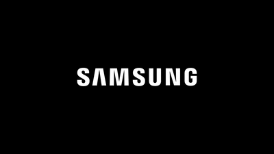
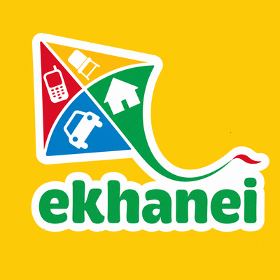
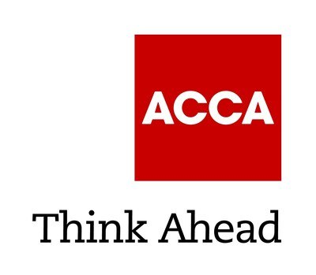
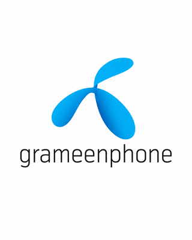
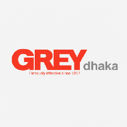
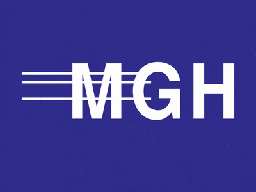
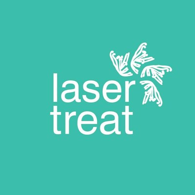
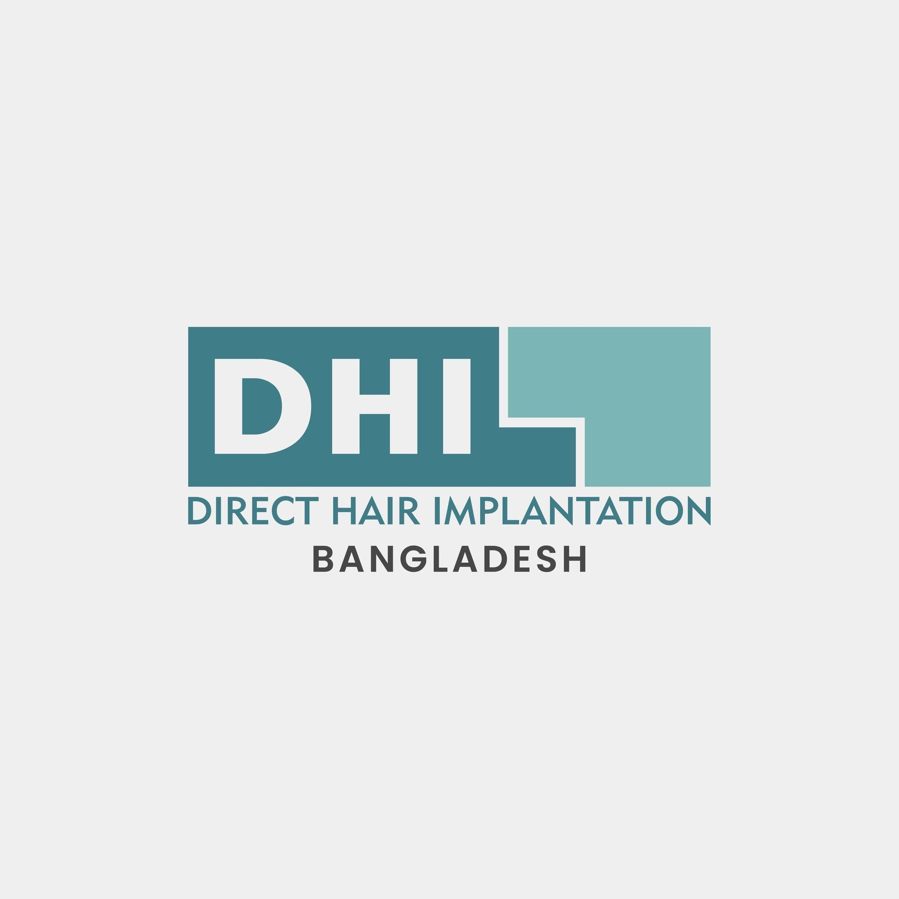
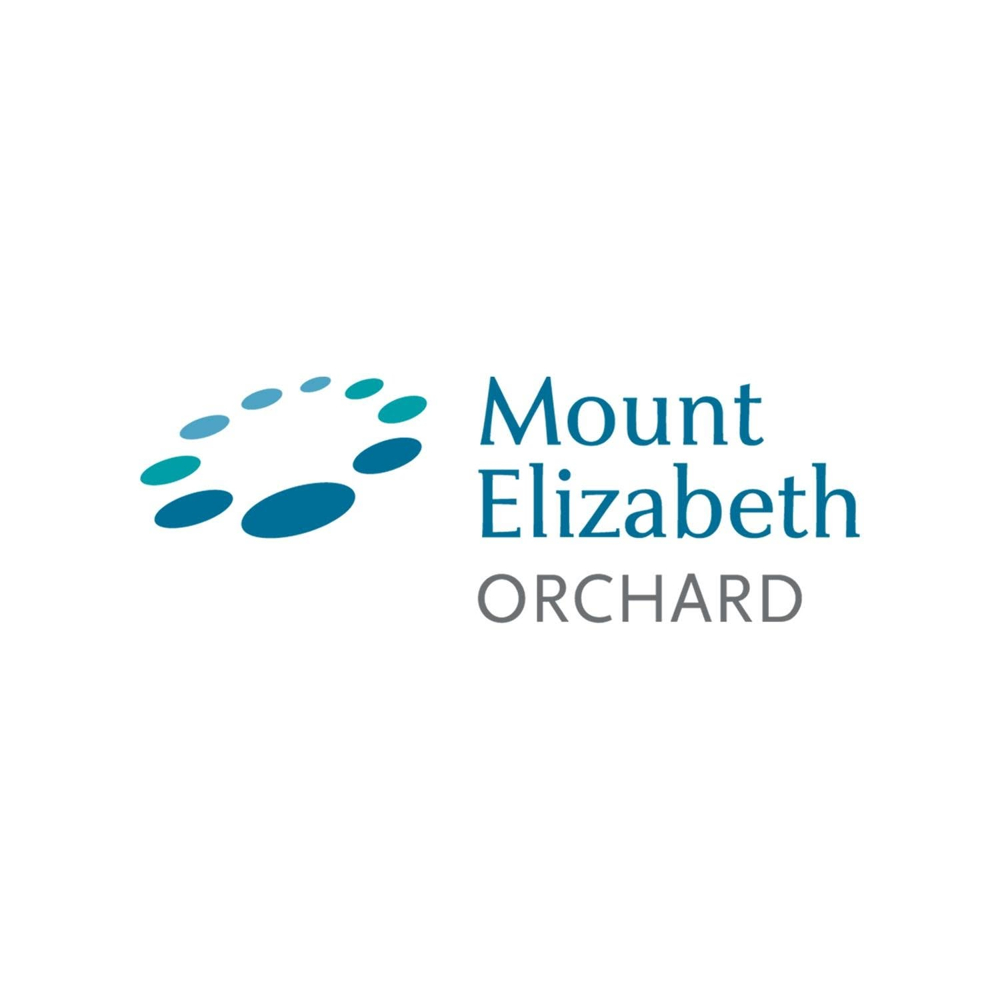
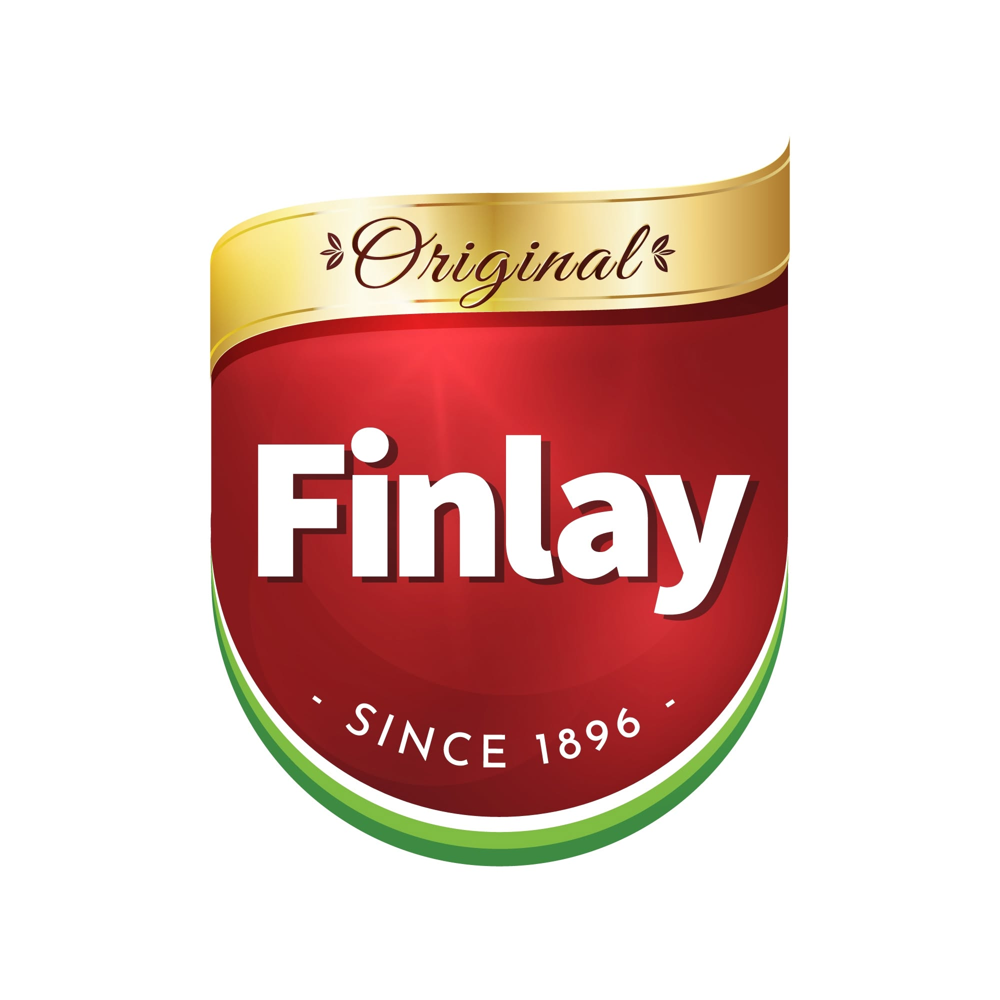
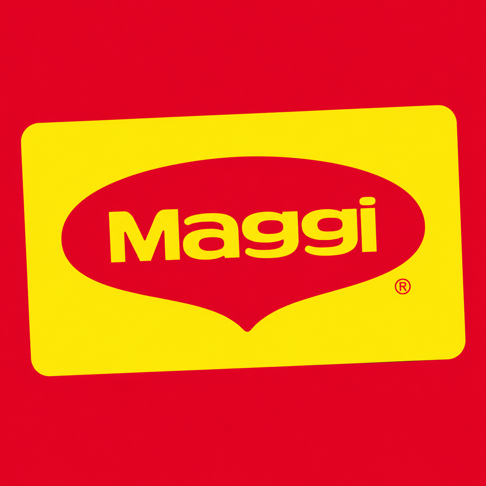
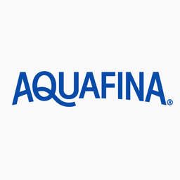
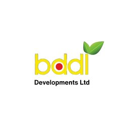
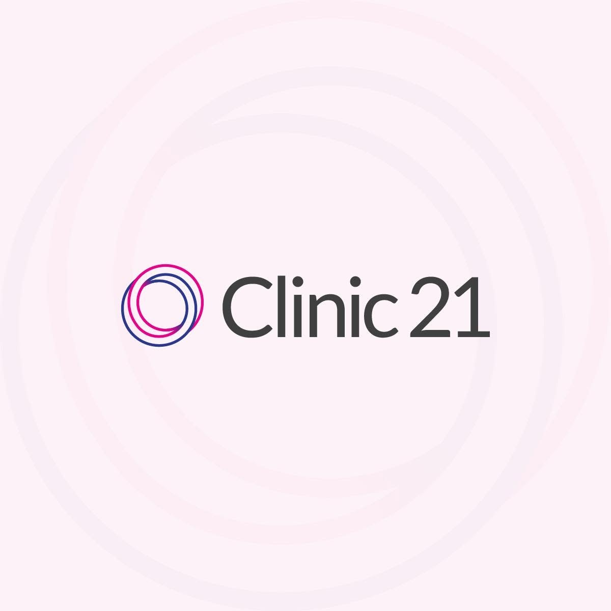
Challenge → insight → execution → result.
Start with the featured six — one per theme, each showing the constraint, the move and the outcome before you open it. Filter by theme, or explore all twenty-one initiatives across eight organizations, each with its strategy infographic.
The full arc.
Fourteen roles, 2009 → today. Every role's complete scope — the case studies above expand the marquee initiatives.
MPH Capstone — Health System Resilience & Economic Protection Campaign
Feb 2026 – Apr 2026- Designed and executed a multi-article, multi-platform public-health advocacy campaign published across The Daily Star (Bangladesh's largest English-language national daily), Eastern Echo and the WellNest Watch column.
- Documented a replicable ~3× Facebook reach amplification through strategic stakeholder tagging; built a rigorous analytics framework with locked methodology and APA-7 benchmarks.
- Co-established the WellNest Watch column as a sustainable campus health-communication channel.
Graduate Hall Director
Jul 2025 – May 2026- (Progressed from Desk Assistant → Resident Advisor, Aug 2024 – Jun 2025, before being appointed Graduate Hall Director.)
- As Graduate Hall Director at Walton Hall, supervised 9 Resident Advisors serving 230 residents; with 44% of the team new, designed an audience-segmentation communication training (tailoring outreach to different resident groups) that drove 541 logged resident engagements and the 2nd-highest resident-connection rate (39.1%) among all campus residence halls.
- Built an automated duty-scheduling system and weekly data-informed insight reports; led crisis responses with DPS and Fire & Rescue; nominated for EMU's Student Gold Medallion Award for Exemplary Leadership.
Graduate Assistant, Health Promotion
Aug 2024 – Jul 2025- Developed and executed campus-wide health-promotion programs with Public Health Education faculty, grounded in health-behavior theory and program-planning frameworks.
- Designed a comprehensive harm-reduction campaign (alcohol & cannabis) — a year-long, multi-channel plan with a defined evaluation framework.
- Created a reusable Public Health Event Framework for Eta Sigma Gamma (planning, execution, evaluation, sustainability).
- Co-created the WellNest Watch public-health column in The Eastern Echo, shaping its messaging and engagement model; amplification reached 10,000+ individuals.
Startup Mentor — BRAC University Cohort, University Innovation Hub Program (UIHP)
Mar 2024 – May 2024- Mentored early-stage startups on business-model refinement and competitive positioning.
- Helped founders build actionable, sector-tailored growth strategies for scalability and market penetration.
- Advised on product development, scaling and funding navigation — applying business-strategy and digital-transformation expertise across healthcare and technology ventures.
Chief Operating Officer
Nov 2023 – Aug 2024- Steered a comprehensive operational and growth strategy yielding 16% YTD revenue growth.
- Launched clinical dermatology and sexual-health sub-brands that improved patient navigation and added 11% revenue within two months.
- Implemented a centralized ERP (supply chain, inventory, clinical resources) and digitized patient files, BI dashboards, HR processes and CX logs — reducing delays and improving decision accuracy.
- Introduced CSAT/NPS measurement systems, increasing patient retention 13% and establishing a continuous quality-improvement framework.
- Cut annual operating expenses by $0.5M through process optimization, reinvesting savings into patient-facing services and care-quality upgrades.
- Built and led a high-performing senior leadership team supporting service delivery, operational consistency and cross-department collaboration.
Head of Marketing & Corporate Sales (Head of Consumer Business)
Jun 2021 – Oct 2023 · led a 30-person org- Led the consumer business portfolio contributing 83% of total organizational revenue across retail and corporate channels.
- Built corporate sales from zero, scaling clients 342 → ~1,400 via a telco-style KAM model and driving 3.1× growth in corporate health programs.
- Stood up product marketing, BI/Data (housed inside marketing), PR, content and design functions — the commercial infrastructure for scale.
- Launched the multidisciplinary Beauty & Wellness Center (dermatology, dentistry, nutrition, acupuncture, psychology) at 68% YoY growth.
- Redesigned diagnostic packages and introduced a DIY health-testing category, increasing lab revenue 34% YoY; grew B2C preventive & primary care 24% YoY.
- Engineered population-scale access (Lifebuoy hotline ~3,000 calls/day + DGHS data-sharing), nationwide door-to-door COVID collection, and a first-in-country 6-hour traveler-testing protocol integrated with the government portal.
- Co-designed ethical, organ-targeted diagnostic packages that avoided physician kickbacks; launched the Ghore Lab home-diagnostics initiative.
- Directed the consumer-business hypergrowth (~45% / ~57% B2C CAGR, 2021–2023) through product, metrics and growth-loop strategies.
- Won a Silver at the Commward — Bangladesh Brand Forum's premier creative-communications award — for a mental-health awareness campaign, the only healthcare campaign recognized that year; secured Praava's status as a Gulf-recognized health center (authorized to issue medical clearances accepted by Gulf countries).
Senior Manager, Employer & Member Affairs (Team Lead)
Jan 2019 – May 2021 · Business Development- Achieved 100% of all 2020–21 targets: new-member conversion 378→435 (+15.1%), member retention 98.2%, affiliate retention +2.4%.
- Designed and owned the Employer & Member Affairs operating model — 15+ KPI-linked activity types on a 19/20→24/25 roadmap; doubled big-corporate approved employers (8→16), MNCs and large local organizations with sizable finance teams.
- Planned and executed the 'Business Partner of the Future' round table (PwC, The Daily Star) and contributed on the panel alongside the finance C-suite; ran the Post-Budget 2020 round table (Kaler Kantho, 18 veterans).
- Executed the ~400-person flagship New Member Ceremony (Comptroller & Auditor General as Chief Guest) and delivered the 'Smarter Cities' professional-insight keynote.
- Initiated strategic partnerships (BSHRM, CFO Forum, ICAB, ICMAB, FRC); arranged a 17-country data-analytics training; partnered with Ex-Tax on an SDG tax study; designed the 'ACCA Next Leader' talk show with Channel i.
Manager, Product Planning
Sep 2017 – Dec 2018 · Q3’18 Business Performer- Led the record-setting Note9 preorder launch (1.54× YoY, #1 globally for growth); defined GTM for entry-segment J2 4G / J2 Core (~2,600 units/day).
- Built Samsung's online footprint via the national-distributor e-commerce marketplace and online-specific SKUs across every major platform.
- Created a market-first consumer loyalty program with Samsung's R&D institute (SRBD) and a novel monsoon water-damage campaign off a multi-year breakage simulation.
- Ran monthly market-transition planning with internal and distributor teams (volumes, allocations, ramp-ups, transition plans), liaising with regional management and HQ; owned localization of each product's key selling points and USP across all touchpoints.
Brand & Communications Manager (Brand & Vehicle Category Lead)
Oct 2016 – Sep 2017 · Marketing- Built the nation's #1 motorbike category from zero (overtook the national leader in 2.5 months); led a ~60-person nationwide team plus a 3-person creative team.
- Designed the territory-manager / live audit-call reconciliation quality system and a semi-pro seller key-account team.
- Conceived the 'Bike Bazaar' trust event (free mechanic checks + Bangladesh Road Transport Corporation vehicle-registration verification) and a consumer-goods-style offline trade play (branded light-boxes for 30% of partner electricity bills).
- Drove 25% category revenue and 15% market-share growth; wrote TVC stories produced and aired; served as lead planner for the Cellbazar→Ekhanei rebrand.
Marketing Manager (Marketing Lead)
Jun 2015 – Oct 2016 · Marketing- Led the 10-million-beneficiary G2P stipend campaign via residence-mapped point-of-sale materials, automated telco voice calls (IVR) and rural mosque activations.
- Built the in-house creative team (5) and brand book from scratch; merged digital with the call center for category-leading social responsiveness.
- Owned ATL/BTL/digital strategy and the website revamp (35% bounce-rate reduction, 50% follower growth); brand awareness +~20%, engagement +~15%.
- Ran national/international press events (Eden College launch with the Education Minister; Grameen Bank/Shakti signings); won the Banking Fair Award of Excellence.
Senior Executive, Strategic Planning (ATL & Digital)
Dec 2013 – May 2015 · Strategic Planning- Led planning + execution of the flagship Lux Channel i Superstar 2014 platform; promoted to lead a wing of Asiatic Digital (6-person team, full client autonomy).
- Scaled the digital practice to ~$1M monthly revenue in seven months; launched Mirinda past 100,000 Facebook fans; managed a multi-brand F&B portfolio (NESCAFÉ, Finlay).
- Planned PepsiCo's 2015 World Cup activation, 7Up and Airtel's 3G launch; led the Cellbazar→Ekhanei rebrand; delivered comms for Mount Elizabeth Hospital and Kaler Kantho.
Executive, Brand
May 2013 – Nov 2013 · Corporate Brands- Developed the group brand system across diverse business units (logistics, shipping, aviation, restaurant, radio), maintaining positioning consistency unit by unit.
- Managed domestic and overseas vendors with end-to-end quality control of group brand collateral.
- Secured and executed lead-sponsor presence at BATEXPO 2013 and MGH's Air Cargo & Logistics Asia 2013 (Singapore); created the 'Foortibaaz' Radio Foorti activation.
Account Executive
Oct 2011 – May 2013 · Client Service- Owned retainer portfolios for Akij F&B and GSK (plus Pizza Inn, BDDL) with 95% client retention.
- Distilled the 'purity/truthfulness' Frutika positioning from production insight; co-developed the Pizza Inn 'Bring Your Own Balish' challenger campaign.
- Mastered full-cycle TVC production (pre/during/post), photoshoots and static creative; delivered 10+ launches in under two years; owned budgeting and vendor negotiation; trained 2 interns.
Customer Manager
May 2009 – Oct 2011 · Customer Service- Handled 90–100 daily interactions across premium, roaming, retailer and mass segments (90%+ CSAT, 85% first-call resolution).
- Founding member of award-winning 'Team Sindbad' (Best Proactive Team 2010); Employee of the Month ×3; onboarded most of the team as it scaled 8→21 — while self-funding undergraduate studies.
What senior leaders say.
Verbatim LinkedIn endorsements from managers and colleagues.
I am delighted to write this recommendation for Shafaat Ali Choyon, who has been an invaluable member of our Praava team for more than two years. Shafaat has a radiant personality that brings joy to our workplace and keeps the team morale high. In his professional capacity as a marketer, Shafaat has consistently demonstrated creativity and innovation. His unique ideas for marketing campaigns have significantly enhanced our brand identity and image. Shafaat is also an exceptional team leader — his leadership style is inclusive and supportive. Moreover, he has shown remarkable resilience in high-pressure situations. I wholeheartedly recommend him for any growth and marketing-related roles.
Shafaat is a talented leader, creative thinker and team builder. He took over the marketing function at Praava and built a solid, highly effective team that delivers results. He has a steady hand, is very resilient and knows the market extremely well. He took over the Praava brand at an important inflection point and delivered significant growth, executing a complex strategy in very difficult pandemic operating circumstances. I trust Shafaat and would work with him again any minute.
I had the great pleasure of working with Md Shafaat Ali during a period of great change in Ekhanei. I quickly identified him as one of the great potentials and a strong change agent, and during the implementation he proved instrumental in executing the new strategy. Choyon's strengths are in planning, execution, partnerships and project management, in addition to being a seasoned marketer and brand specialist. With Choyon you get a great guy who gives everything for his team and employer — highly recommended.
Choyon is an extremely capable and dedicated marketing professional. He has strong strategic, analytical and communication skills, further enhanced by his solid background in brand and communications and his enthusiasm to do better. I have seen his super ability in getting things done properly, even in a difficult environment. He is creative and structured, can connect with anyone in a business-effective manner, a great team manager and very persuasive.
Shafaat Ali Choyon is a talented young professional. During his days in Samsung Electronics (Bangladesh), he was a key resource for campaign design and product management. He has great ability to manage things singlehandedly and at the same time lead complex projects with sheer quality. I am a real admirer of his people-management skill — he can take control over complex situations with his leadership proficiency.
Shafaat has proven himself to be a very valuable resource in just a year, in a completely different sector from his previous experiences — evidence of qualities such as high adaptability. He has always brought innovation and experience to the table. I highly regard him as a motivated professional.
Md Shafaat is someone you will go to for a solution to your problems, and as an expert strategic planner he knows how to solve them intelligently in a planned way. I was lucky enough to work with him during his tenure in MGH Group and have observed him plan and implement big-scale local and foreign events.
I have had the opportunity to work with Shafaat on a number of occasions at MGH. I have found him to be very collected and detail oriented. He knows his strengths and gets the job done. He is a good listener as well — a friendly person by nature and a good team player. I wish him all the success in future. You deserve it!
I am delighted to write this recommendation for Shafaat Ali Choyon, who has been an invaluable member of our Praava team for more than two years. Shafaat has a radiant personality that brings joy to our workplace and keeps the team morale high. In his professional capacity as a marketer, Shafaat has consistently demonstrated creativity and innovation. His unique ideas for marketing campaigns have significantly enhanced our brand identity and image. Shafaat is also an exceptional team leader — his leadership style is inclusive and supportive. Moreover, he has shown remarkable resilience in high-pressure situations. I wholeheartedly recommend him for any growth and marketing-related roles.
Shafaat is a talented leader, creative thinker and team builder. He took over the marketing function at Praava and built a solid, highly effective team that delivers results. He has a steady hand, is very resilient and knows the market extremely well. He took over the Praava brand at an important inflection point and delivered significant growth, executing a complex strategy in very difficult pandemic operating circumstances. I trust Shafaat and would work with him again any minute.
I had the great pleasure of working with Md Shafaat Ali during a period of great change in Ekhanei. I quickly identified him as one of the great potentials and a strong change agent, and during the implementation he proved instrumental in executing the new strategy. Choyon's strengths are in planning, execution, partnerships and project management, in addition to being a seasoned marketer and brand specialist. With Choyon you get a great guy who gives everything for his team and employer — highly recommended.
Choyon is an extremely capable and dedicated marketing professional. He has strong strategic, analytical and communication skills, further enhanced by his solid background in brand and communications and his enthusiasm to do better. I have seen his super ability in getting things done properly, even in a difficult environment. He is creative and structured, can connect with anyone in a business-effective manner, a great team manager and very persuasive.
Shafaat Ali Choyon is a talented young professional. During his days in Samsung Electronics (Bangladesh), he was a key resource for campaign design and product management. He has great ability to manage things singlehandedly and at the same time lead complex projects with sheer quality. I am a real admirer of his people-management skill — he can take control over complex situations with his leadership proficiency.
Shafaat has proven himself to be a very valuable resource in just a year, in a completely different sector from his previous experiences — evidence of qualities such as high adaptability. He has always brought innovation and experience to the table. I highly regard him as a motivated professional.
Md Shafaat is someone you will go to for a solution to your problems, and as an expert strategic planner he knows how to solve them intelligently in a planned way. I was lucky enough to work with him during his tenure in MGH Group and have observed him plan and implement big-scale local and foreign events.
I have had the opportunity to work with Shafaat on a number of occasions at MGH. I have found him to be very collected and detail oriented. He knows his strengths and gets the job done. He is a good listener as well — a friendly person by nature and a good team player. I wish him all the success in future. You deserve it!
Published writing.
14 articles · read summaries & sources →Core competencies
Strategy & Commercial
Behavioral Science & Communication
Operations, Data & Transformation
Education & credentials
Training & memberships
Attention → Intelligence → Outcomes
Three ways my work has created value over sixteen years — first by winning attention, then by turning data and behaviour into better decisions, now by owning measurable outcomes. It isn't a theory about markets; it's a reading of one record — and each stage carries its own receipts.
Earn the signal
▸ Samsung Note9 — #1 globally for growth
▸ Asiatic Digital — ~$1M/mo in 7 months
Read the system
▸ BI/Data housed inside marketing
▸ ACCA — 100% of targets, KPI-linked
Move the number
▸ Laser Treat — −$0.5M opex, +13% retention
▸ SureCash 10M reached · MPH·CHES®
…and the site itself is built on the same discipline.
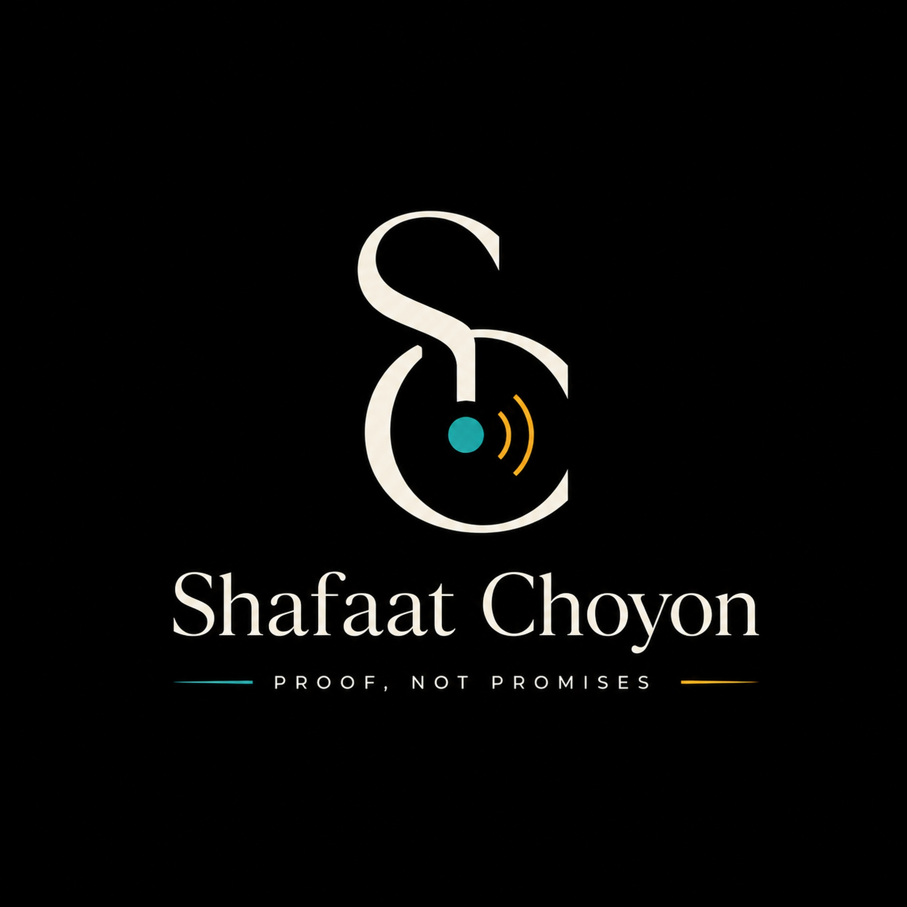
Interlocked S and C read the system; the teal node and amber signal waves stand for turning attention into intelligence, and intelligence into measurable outcomes.
Reads complex systems clearly, then turns clarity into growth.
No hype, no jargon. Every claim arrives with a number, and complexity gets translated — not performed.
The through-line in three words — longer form: read the system, find the lever, move the number.
The palette is deliberately restrained — about 84% anchor and ground (Obsidian, Navy, Ivory) and only ~14% signal (Teal, Amber). The rationing is the point: colour is spent only where it carries meaning, so attention lands on the proof, never the ornament.
The anchor — credibility and authority; the ground everything earns its place against.
Depth and institutional seriousness — structure without shouting.
Clarity and human warmth — where the words live, kept highly legible.
The signature — strategic intelligence, how the thinking works. The one colour that's mine.
The proof — reserved for the earned outcome, the number that mattered.
Tension — rare urgency, used almost never so it still means something.
One career, seen four ways.
16+ years turning complex systems into measurable results across growth, communication, product and public health. Choose the lens that fits why you're here — every lens shows the complete portfolio, just framed for what matters to you.

One career, seen four ways — here's the short version, in my own words.